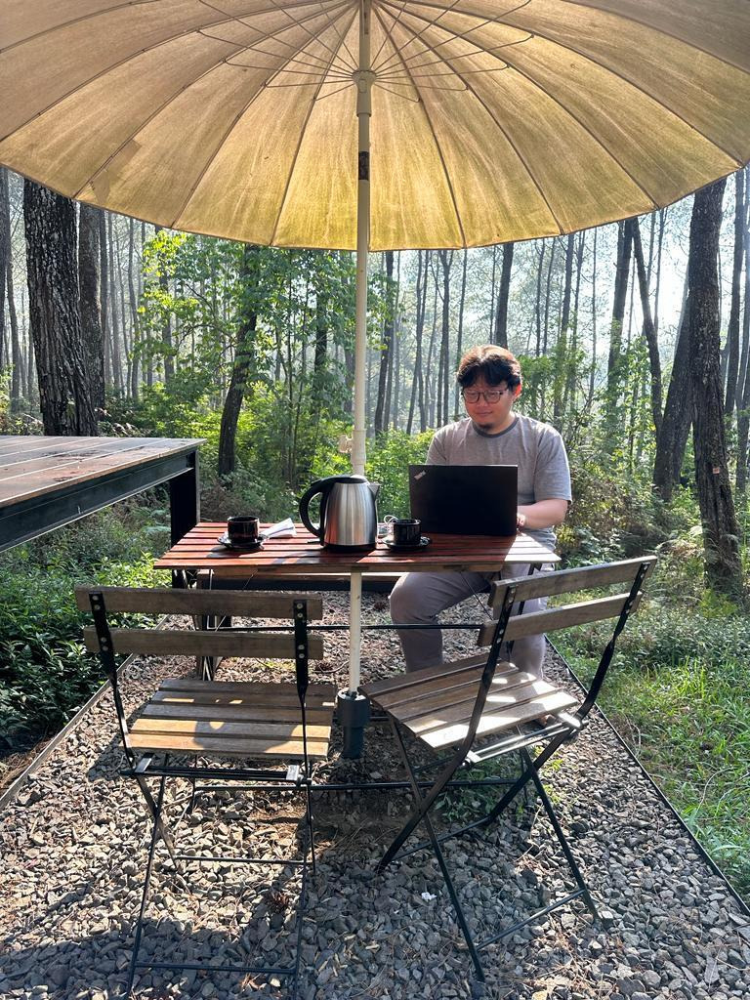

Hendri Karisma
VP of Engineering @ Jejakin · Lecturer & Director of AI Study Center @ STMIK Tazkia
Focus: sustainable secure computation. Interests: distributed systems, theoretical & applied machine learning / artificial intelligence, and software engineering.
🎓 M.Sc. in Informatics — Institut Teknologi Bandung (ITB) · B.Eng. in Informatics — Universitas Komputer Indonesia (UNIKOM)
I lead the engineering teams, product architecture, and AI research at Jejakin.com. My current focus is driving the architectural evolution of our climate tech ecosystem toward a highly flexible, plugin-based framework, while adopting clean tech stacks to optimize compute efficiency and reduce system energy consumption. Together with our engineering and data teams, I oversee our three core platforms: Carbon IQ (automated emission ingestion & ESG reporting), Carbon Space (an embedded, B2B2C carbon & eco-contribution marketplace), and Carbon Atlas (an enterprise SaaS/On-Premise MRV and project onboarding platform utilizing geospatial telemetry). As Head of AI, I direct our collaborative research in specialized environmental AI and multi-modal LLMs for compliance automation. I also bridge industry with academia as a Computer Science Lecturer at STMIK Tazkia and Director of the AI Study Center.
Contact
- Jejakin hendri.karisma@jejakin.com
- STMIK Tazkia hendri@stmik.tazkia.ac.id
- Personal situkangsayur@gmail.com · hendri.karism4@gmail.com
Presentation slides
Presentasi CCA - IT Now and Tomorrow
Slide deck (sharing session / talk).
Introduction to Topological Data Analysis
Slide deck (sharing session / talk).
Software Engineering: Today in The Battlefield
Slide deck (sharing session / talk).
Artificial Intelligence and The Complexity
Slide deck (sharing session / talk).
Fraud Detection System using Deep Neural Networks
Slide deck (sharing session / talk).
Comparison Study of NN and DNN on Repricing GAP Prediction
Slide deck (sharing session / talk).
Machine Learning Research in Blibli
Slide deck (sharing session / talk).
Python, Data Science, and Unsupervised Learning
Slide deck (sharing session / talk).
Machine Learning: an Introduction and Cases
Slide deck (sharing session / talk).
DevSecOps Microservices
Slide deck (sharing session / talk).
Python 101 - Indonesia AI Society
Slide deck (sharing session / talk).
Data Analytics Today - Data, Tech, and Regulation
Slide deck (sharing session / talk).
Data - Science and Engineering slide at Bandungpy Sharing Session
Slide deck (sharing session / talk).
Sharing Akka
Slide deck (sharing session / talk).
ML Abstraction for Keras to Serve Several Cases
Slide deck (sharing session / talk).
Websites
Papers
- Comparison study of neural network and deep neural network on repricing GAP prediction in Indonesian conventional public bank
With the late Prof. Dwi Hendratmo Widyantoro (ITB) — rahimahullah.